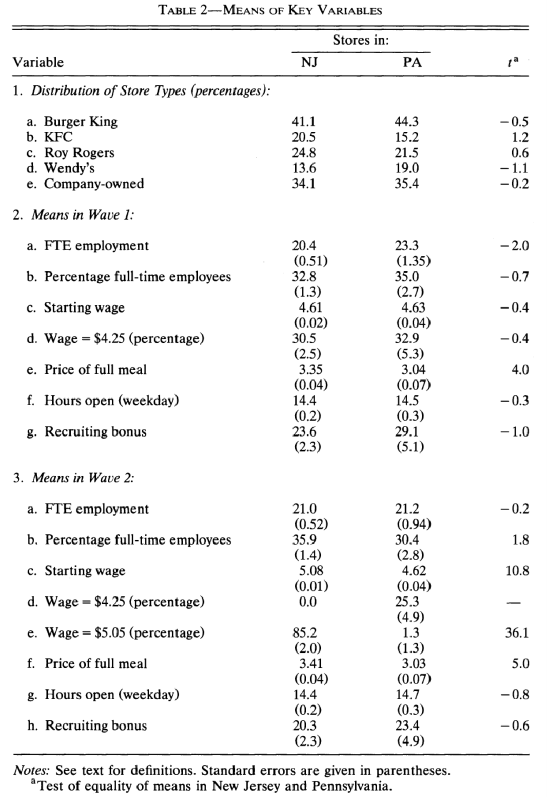
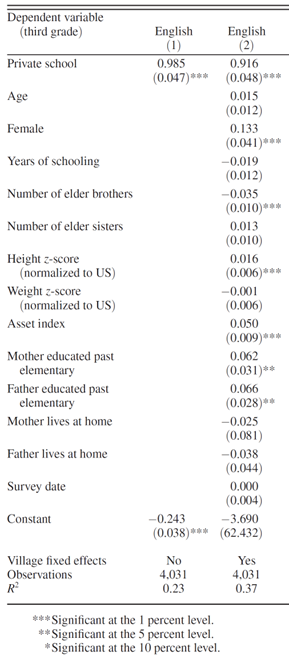
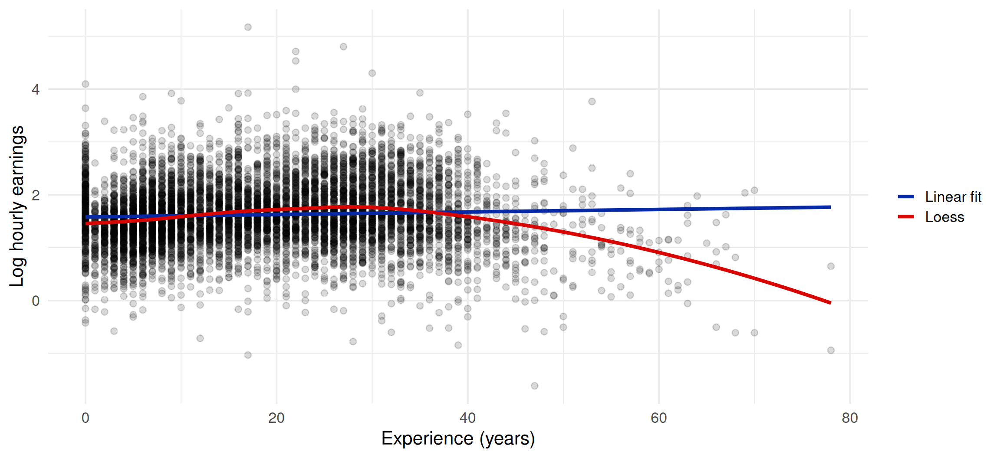
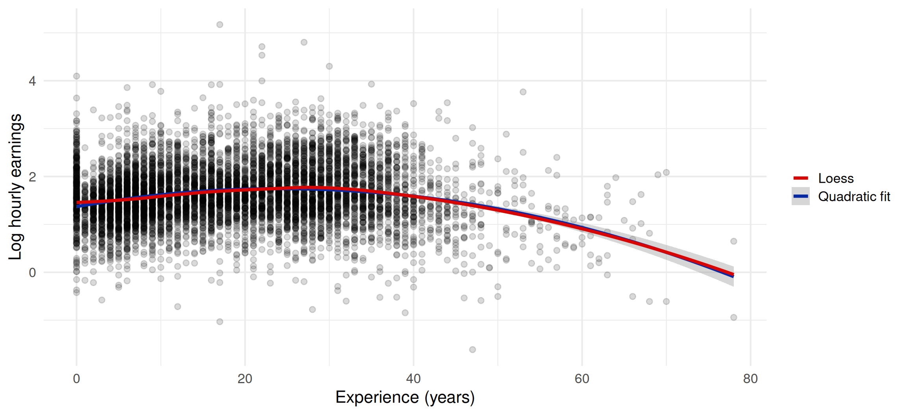

t_wage_w1 <- (4.61 - 4.63) / sqrt(0.02^2 + 0.04^2)
t_wage_w1[1] -0.4472136Tutorial #3
Department of Economics, SciencesPo
Card and Krueger (1994) study the effect of minimum wage laws on employment. They carried out two waves of a phone survey of fast-food stores in New Jersey and Pennsylvania, before (wave 1) and after (wave 2) the introduction of a $5.05 minimum wage in New Jersey. Table 2 summarizes the key outcomes used in the study across the two states.
Question
What are the statistics presented in each column?

Question
How is the t-statistic for the starting wage in Wave 1 (Panel 2) computed?
The two samples (NJ and PA stores) are independent, so we use the formula from Tutorial 2:
\[t = \frac{\overline{Y}_{NJ} - \overline{Y}_{PA}}{\sqrt{SE(\overline{Y}_{NJ})^2 + SE(\overline{Y}_{PA})^2}}\]
In R:
We find the \(-0.4\) reported in the table.
Question
Using the 5% significance level, which conclusions would you draw from this table regarding the effect of minimum wage laws on starting wages? Employment?
wage_w1 wage_w2 fte_w1 fte_w2
-0.45 11.16 -2.01 -0.19 (We get likely 11.2 instead of 10.8 for wages in wave 2 because the table rounds the standard errors.)
Question
In Panel 1 the authors compare the market share of different store types at baseline across the two states. What are the lessons from this exercise?
Teaser
There is a more interesting assumption that Card and Krueger are using: you will study it next semester. Any idea?
They assume that, without the law, employment in NJ would have evolved like employment in PA (parallel trends).
Question
Using only information present in this table, how would you test the effect of minimum wages on employment with a regression?
Post-law comparison (wave 2 only):
\[Y_i = \beta_0 + \beta_1 NJ_i + \varepsilon_i\]
where \(Y_i\) is wages or employment in wave 2 in restaurant \(i\) and \(NJ_i\) a dummy equal to one if restaurant \(i\) is in New Jersey. \(\hat\beta_1\) is the difference in means between NJ and PA.
Controlling for store characteristics (e.g. company-owned):
\[Y_i = \beta_0 + \beta_1 NJ_i + \beta_2 Company_i + \varepsilon_i\]
Difference in differences, using wave 1 as well:
\[Y_{it} = \beta_0 + \beta_1 NJ_i \times Wave2_t + \beta_2 NJ_i + \beta_3 Wave2_t + \varepsilon_{it}\]
where \(Wave2_t\) is a dummy equal to one for wave 2. \(\hat\beta_1\) is the change in NJ minus the change in PA:
FTE employment increased by about 2.7 employees per store in NJ relative to PA.
Andrabi et al. (2011) discuss the value-added model which is often used to estimate the effect of school or teacher characteristics, using the example of private schools in Pakistan. They first regress \(y_{it}\), English test scores in third grade for individual \(i\), on a dummy \(P_{it}\) equal to one if individual \(i\) is in private school in third grade:
\[y_{it} = \alpha_0 + \alpha_1 P_{it} + u_{it}\]
Question
What is the issue with this regression? What would you do about it?
What to do: control for the omitted variables we observe (parental education, wealth, …), or better, find a source of variation in \(P_{it}\) unrelated to \(u_{it}\) (a lottery for school places, for instance).
They follow up with a regression:
\[y_{it} = \alpha_0 + \alpha_1 P_{it} + \alpha_2 X_{it} + u_{it}\]
Questions

The stars indicate the significance level at which we reject \(H_0\): coefficient \(= 0\) (see the notes below the table):
***: p-value \(< 0.01\), i.e. \(|t| > 2.58\)**: p-value \(< 0.05\), i.e. \(|t| > 1.96\)*: p-value \(< 0.10\), i.e. \(|t| > 1.64\)They now estimate what they call a lagged value-added model by including test scores at the beginning of school (\(y_{it-1}\)) in the equation:
\[y_{it} = \alpha_0 + \alpha_1 P_{it} + \beta y_{it-1} + u_{it}\]
Questions
Why can \(y_{it-1}\) be a good control to add? Why is it called value added?
Imbert (2013) decomposes earnings inequality between the public and private sectors in Vietnam. You will find the dataset from his paper on Moodle. You will use this data, focusing on log hourly deflated earnings (lhearnings1def), to estimate the returns to education through a regression similar to the Mincer model (Mincer 1974).
In the following questions, you should focus on estimating the causal impact of education on earnings.
lm() silently drops the other observations.Question
First, estimate the relationship between log earnings and levels of education using a regression (command lm). How should you interpret the coefficients for these levels of education?
grade measures the number of years of education:
Call:
lm(formula = lhearnings1def ~ grade, data = df_w)
Residuals:
Min 1Q Median 3Q Max
-3.4587 -0.3511 -0.0007 0.3519 3.3276
Coefficients:
Estimate Std. Error t value Pr(>|t|)
(Intercept) 1.069973 0.018387 58.19 <2e-16 ***
grade 0.064504 0.001982 32.55 <2e-16 ***
---
Signif. codes: 0 '***' 0.001 '**' 0.01 '*' 0.05 '.' 0.1 ' ' 1
Residual standard error: 0.583 on 7089 degrees of freedom
Multiple R-squared: 0.13, Adjusted R-squared: 0.1299
F-statistic: 1060 on 1 and 7089 DF, p-value: < 2.2e-16The regression is log-linear: the coefficient is a change in log earnings, which we can interpret as a percentage change.
\[ \frac{e^{1+(\text{grade} + x)\cdot \widehat \beta}}{e^{1+\text{grade}\cdot \widehat \beta}} -1 = e^{x\hat\beta} - 1\]
For a one-year increase in education, that is:
We can also use the highest diploma (degree) and let each level have its own coefficient. The 708 workers with a missing diploma all have fewer than 5 years of education: they have no diploma.
Estimate Std. Error t value Pr(>|t|)
(Intercept) 1.305 0.017 76.212 0
diplomaPrimary 0.125 0.022 5.682 0
diplomaLower secondary 0.239 0.021 11.125 0
diplomaUpper secondary 0.441 0.022 20.215 0
diplomaPost-secondary 0.966 0.025 38.425 0 diplomaPrimary diplomaLower secondary diplomaUpper secondary
0.133 0.270 0.554
diplomaPost-secondary
1.628 grade stops at 12: the 910 workers with a post-secondary degree all have grade = 12.Question
Are you worried about omitted variable bias when using this model?
Yes! Any variable that affects earnings and is correlated with education biases our estimate:
The Mincer equation (Mincer 1974) predicts that wages should be a function of both education and experience:
\[Y_i = \beta_0 + \beta_1 \times Education_i + \beta_2 \times Experience_i + \varepsilon_i\]
Question
Regress log hourly wages on education and experience (exp) of individuals. Discuss this regression.
Call:
lm(formula = lhearnings1def ~ grade + exp, data = df_w)
Residuals:
Min 1Q Median 3Q Max
-3.6901 -0.3343 0.0111 0.3486 3.3179
Coefficients:
Estimate Std. Error t value Pr(>|t|)
(Intercept) 0.8714748 0.0234994 37.09 <2e-16 ***
grade 0.0713851 0.0020246 35.26 <2e-16 ***
exp 0.0073899 0.0005551 13.31 <2e-16 ***
---
Signif. codes: 0 '***' 0.001 '**' 0.01 '*' 0.05 '.' 0.1 ' ' 1
Residual standard error: 0.5759 on 7088 degrees of freedom
Multiple R-squared: 0.1512, Adjusted R-squared: 0.151
F-statistic: 631.5 on 2 and 7088 DF, p-value: < 2.2e-16exp is potential experience: for 93% of workers, it is exactly age - years of education - 6. It does not account for unemployment spells or time out of the labor force.Questions
Plot the relationship between experience and log earnings. Pay attention to include the regression line. What can you say? Do you think we should add a term for \(\text{experience}^2\) in the regression?
Hint: you can try to use the loess method in geom_smooth to better observe the relationship between earnings and experience.
ggplot(df_w, aes(x = exp, y = lhearnings1def)) +
geom_point(alpha = 0.15) +
geom_smooth(aes(colour = "Linear fit"), method = "lm", formula = y ~ x, se = FALSE) +
geom_smooth(aes(colour = "Loess"), method = "loess", formula = y ~ x, se = FALSE) +
scale_colour_manual(name = NULL, values = c("Linear fit" = "#0729a6", "Loess" = "#d90502")) +
labs(x = "Experience (years)", y = "Log hourly earnings") +
theme_minimal(base_size = 16)
\[Y_i = \beta_0 + \beta_1 Educ_i + \beta_2 Exp_i + \beta_3 Exp_i^2 + \varepsilon_i\]
We expect \(\beta_2 > 0\) and \(\beta_3 < 0\).
Call:
lm(formula = lhearnings1def ~ grade + exp + I(exp^2), data = df_w)
Residuals:
Min 1Q Median 3Q Max
-3.4282 -0.3360 0.0075 0.3352 3.2371
Coefficients:
Estimate Std. Error t value Pr(>|t|)
(Intercept) 6.946e-01 2.493e-02 27.86 <2e-16 ***
grade 6.987e-02 1.981e-03 35.28 <2e-16 ***
exp 3.362e-02 1.538e-03 21.86 <2e-16 ***
I(exp^2) -5.884e-04 3.228e-05 -18.23 <2e-16 ***
---
Signif. codes: 0 '***' 0.001 '**' 0.01 '*' 0.05 '.' 0.1 ' ' 1
Residual standard error: 0.5629 on 7087 degrees of freedom
Multiple R-squared: 0.1892, Adjusted R-squared: 0.1889
F-statistic: 551.4 on 3 and 7087 DF, p-value: < 2.2e-16ggplot(df_w, aes(x = exp, y = lhearnings1def)) +
geom_point(alpha = 0.15) +
geom_smooth(aes(colour = "Quadratic fit"), method = "lm",
formula = y ~ x + I(x^2), se = TRUE) +
geom_smooth(aes(colour = "Loess"), method = "loess", formula = y ~ x, se = FALSE) +
scale_colour_manual(name = NULL, values = c("Quadratic fit" = "#0729a6", "Loess" = "#d90502")) +
labs(x = "Experience (years)", y = "Log hourly earnings") +
theme_minimal(base_size = 16)
Questions
Try adding a variable indicating whether the individual is a male or a female to the regression. Also try to add variables indicating the number of hours worked in a day by the individual (hoursaday1), and their occupation (occupation1). Discuss the addition of covariates in the model.
gender is equal to 1 for men. occupation1 is an occupation code: the numbers have no meaning, so we include it as a set of dummies with factor().
| Model 1 | Model 2 | Model 3 | Model 4 | Model 5 | Model 6 | |
|---|---|---|---|---|---|---|
| Years of education | 0.065*** | 0.071*** | 0.070*** | 0.070*** | 0.068*** | 0.035*** |
| (0.002) | (0.002) | (0.002) | (0.002) | (0.002) | (0.002) | |
| Experience | 0.007*** | 0.034*** | 0.032*** | 0.034*** | 0.030*** | |
| (0.001) | (0.002) | (0.002) | (0.002) | (0.001) | ||
| Experience squared | -0.001*** | -0.001*** | -0.001*** | -0.001*** | ||
| (0.000) | (0.000) | (0.000) | (0.000) | |||
| Male | 0.145*** | 0.153*** | 0.175*** | |||
| (0.014) | (0.013) | (0.013) | ||||
| Hours worked per day | -0.073*** | -0.069*** | ||||
| (0.005) | (0.004) | |||||
| Constant | 1.070*** | 0.871*** | 0.695*** | 0.621*** | 1.210*** | 2.006*** |
| (0.018) | (0.023) | (0.025) | (0.026) | (0.046) | (0.080) | |
| Occupation dummies | No | No | No | No | No | Yes |
| R2 | 0.130 | 0.151 | 0.189 | 0.202 | 0.228 | 0.360 |
| Adj. R2 | 0.130 | 0.151 | 0.189 | 0.202 | 0.227 | 0.357 |
| Num. obs. | 7091 | 7091 | 7091 | 7091 | 7091 | 7091 |
| ***p < 0.01; **p < 0.05; *p < 0.1 | ||||||
Finally, Andrabi et al. (2011) estimate a model which they call a restricted model:
\[y_{it} - y_{it-1} = \alpha_0 + \alpha_1 P_{it} + u_{it}\]
| Model (key assumption, estimator) | Persistence | Private school |
|---|---|---|
| M1. Restricted value-added (perfect persistence \(\beta = 1\), OLS) | 1.00 | \(-0.08\) (0.02) |
| M2. Lagged value-added (no effects, no measurement error, OLS) | 0.52 (0.02) | 0.31 (0.02) |
Questions
In what way is it restricted? What do the results suggest?
Let the long regression be \(Y_i = \beta_0 + \beta_1 Educ_i + \beta_2 Exp_i + \varepsilon_i\) and the short regression \(Y_i = b_0 + b_1 Educ_i + e_i\). Then:
\[b_1 = \beta_1 + \beta_2 \times \delta_1\]
where \(\delta_1\) is the coefficient of the regression of the omitted variable on education: \(Exp_i = \delta_0 + \delta_1 Educ_i + u_i\).
grade
0.06450398 grade
0.06450398 \(\beta_2 > 0\) and \(\delta_1 < 0\): the bias \(\beta_2 \times \delta_1\) is negative, the short regression underestimates \(\beta_1\).
Bad control
A bad control is a variable that is itself an outcome of the treatment. Good controls are variables fixed (determined) before the treatment (Angrist and Pischke 2009, sec. 3.2.3).